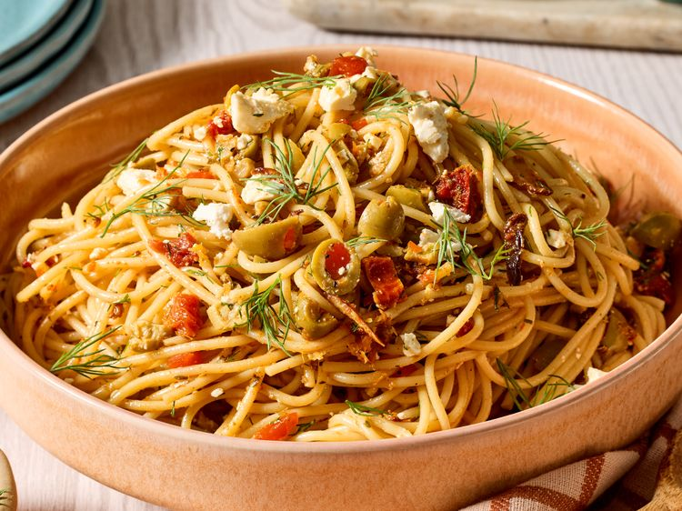

Home
Spaghetti Recipe

Description
This Mediterranean-style spaghetti is a hearty, delightful vegetarian dinner or a delicious complement to
grilled chicken or fish. Flavored with olive oil, garlic, feta, and green olives, it’s light yet satisfying.
Ingredients
- 1 (16 ounce) package spaghetti
- 3/4 cup extra-virgin olive oil
- 6 cloves garlic, sliced
- 1 cup roughly chopped pimento-stuffed olives
- 1 cup crumbled feta cheese
- 1/3 cup chopped sun-dried tomatoes
- 1/4 cup chopped fresh dill, divided
- 1 teaspoon lemon zest
- 3 tablespoons lemon juice
- 2 teaspoons dried oregano
- 2 teaspoons smoked paprika
- 1/2 teaspoon salt
- 1/2 teaspoon freshly ground black pepper
- lemon wedges